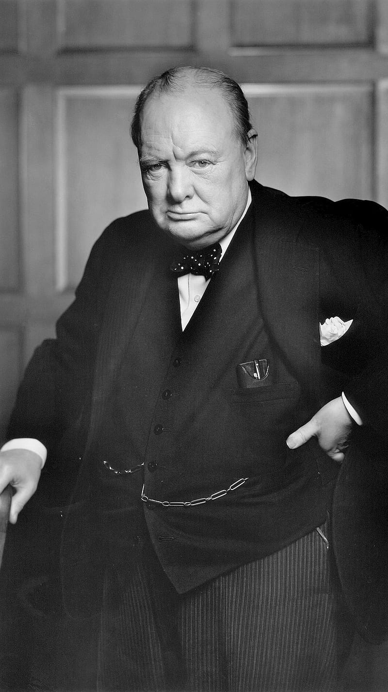
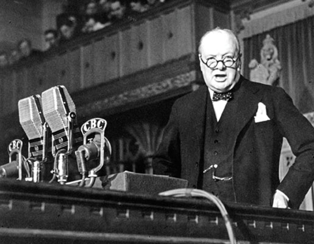
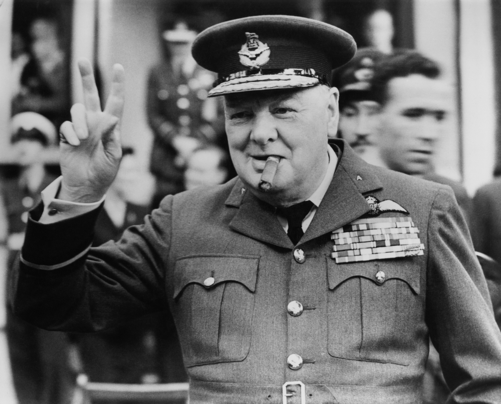
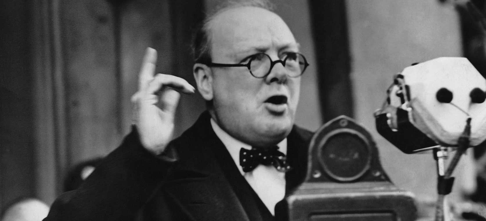
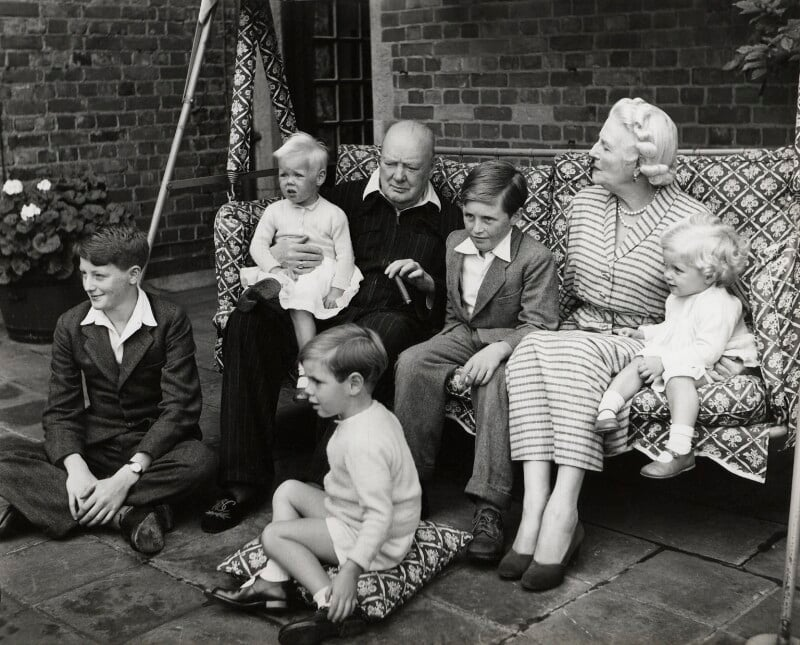
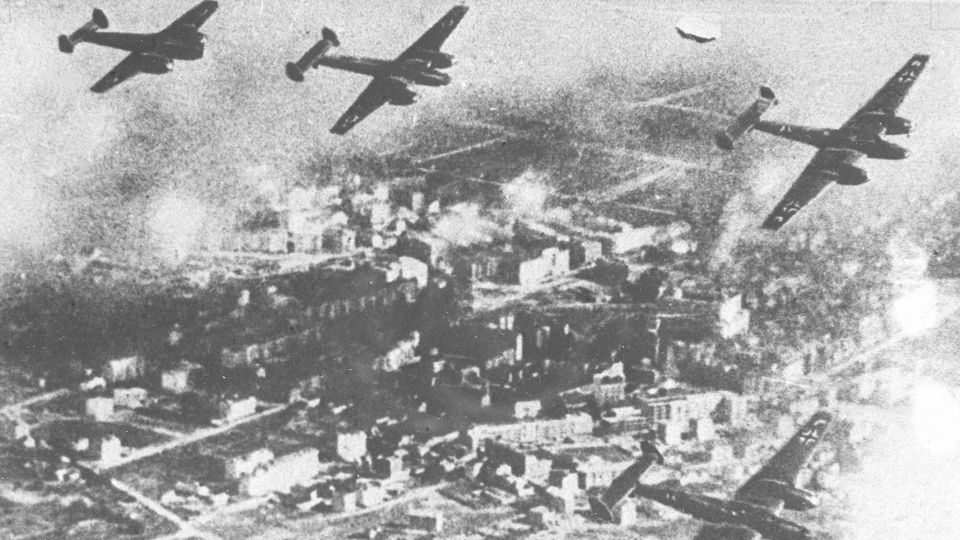
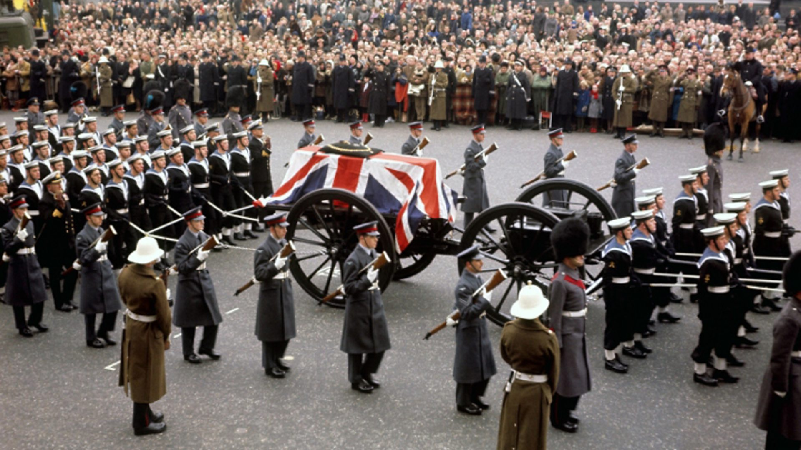

Winston Leonard Spencer Churchill sa narodil 30. novembra 1874 do aristokratickej rodiny vévodov z Marlborough v Blenheimskom paláci. Jeho rané roky boli poznačené privilegovaným životom aj výzvami.
Churchillovo vzdelanie na Kráľovskej vojenskej akadémii Sandhurst položilo základy jeho neskoršej vojenskej kariéry.
Churchillova politická kariéra trvala viac ako šesť desaťročí. Niekoľkokrát menil politické strany, zastával rôzne ministerské posty.
Výrazným obdobím bolo jeho pôsobenie ako prvého lorda admirality pred prvou svetovou vojnou a ako premiéra počas kľúčových období druhej svetovej vojny.
Vojenská kariéra Churchilla začala jeho výmenou do 4. husárskych plukov. Zažil akcie v Indii a Sudáne, pričom jeho skúsenosti formovali jeho pohľad na vojenskú stratégiu.
Počas prvej svetovej vojny slúžil ako veliteľ pluku na Západnom fronte a zohral úlohu v Bitke o Antverpy.
Reči Winstona Churchilla počas druhej svetovej vojny sú legendárne. Jeho prejavy "Budeme bojovať na plážach" a "Ich najlepšia hodina" sú obzvlášť známe pre svoju inšpiráciu a odolnosť.
Jeho výrečnosť a silná oratória spojili britský národ počas niektorých najtmavších dní vojny.
Mimo politiky a vojny mal Churchill bohatý osobný život. V roku 1908 sa oženil s Clementine Hozier a mali spolu päť detí.
Churchill mal vášeň pre maľovanie, vytvoril viac ako 500 diel. Jeho koníčky zahŕňali aj murárčenie a hru v polu.
Ako premiér počas druhej svetovej vojny hral Winston Churchill kľúčovú úlohu pri vedení spojencov k víťazstvu. Jeho strategické rozhodnutia a prejavy inšpirovali národ.
Churchillovo zapojenie do Bitky o Britániu a vylodenia v Normandii predstavovalo obratné body vo vojne.
Rozhodnutia Churchilla počas jeho života zahŕňajú:
Odkaz Winstona Churchilla je viacerostranný. Jeho vedenie počas druhej svetovej vojny, výrazné reči a literárne príspevky zanechali trvalý odkaz na históriu.
Jeho vplyv siahajúci za hranice politiky formoval vnímanie odolnosti a odvahy na generácie do budúcnosti.
